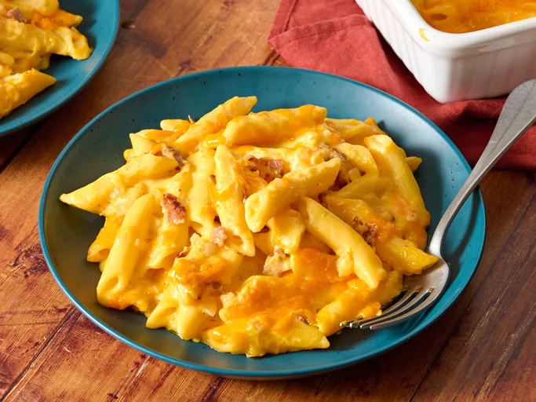

Macaroni and Cheese

Description
This is a delicious variation of macaroni cheese made with penne pasta, bacon, and garlic.
The secret to the heese sauce is constant stirring over low heat. Add the milk just a bit at a time and keep stirring.
Ingredients
- 2 slices of bacon
- 8 ounces penne pasta
- 1 onion, chopped
- 1 clove garlic, minced
- 3 cups shredded Cheddar cheese
- 2 tablespoons butter
- 2 cups milk
Directions
- 1. Gather all ingredients. Preheat the oven to 350°F (175°C).
- 2. Cook the pasta in a large pot with boiling water until al dente. Drain.
- 3. Meanwhile, place bacon in a large, deep skillet. Cook over medium high heat until evenly brown. Remove bacon, drain on paper towels, then crumble and set aside.
- 4. Add onion and garlic into the skillet; cook and stir in bacon grease until softened and fragrant. Remove from heat and add chopped cooked bacon; set aside.
- 5. To make the sauce; Melt the butter in a medium saucepan over low heat; add flour and stir constantly for 2 minutes. Gradually add milk and continue stirring until thickened. Stir in 2 cups of the grated cheddar cheese until melted
- 6. Combine cooked pasta, bacon and onion mixture, and white sauce; pour into a 2-quart casserole dish. Sprinkle remaining 1 cup grated cheddar cheese on top.
- 7. Bake uncovered in preheated oven until cheese on top is melted and brown, 15 to 20 minutes.
- 8. Serve hot and enjoy!
Back to Recipes